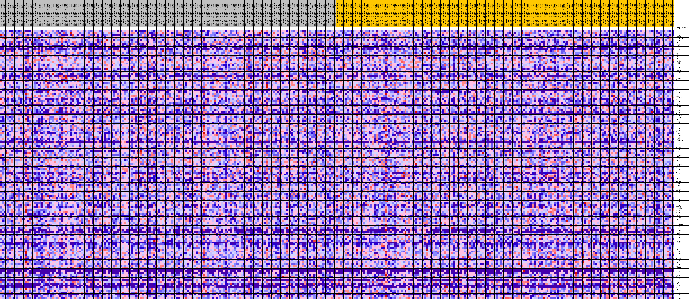
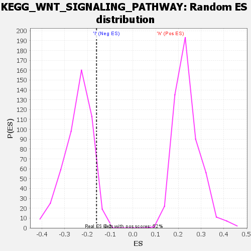

| | | Dataset | VCAN.VCAN.cls#h_versus_l.VCAN.cls#h_versus_l_repos |
| Phenotype | VCAN.cls#h_versus_l_repos |
| Upregulated in class | l |
| GeneSet | KEGG_WNT_SIGNALING_PATHWAY |
| Enrichment Score (ES) | -0.1602223 |
| Normalized Enrichment Score (NES) | -0.660524 |
| Nominal p-value | 0.9585921 |
| FDR q-value | 1.0 |
| FWER p-Value | 1.0 |
Table: GSEA Results Summary
 Fig 1: Enrichment plot: KEGG_WNT_SIGNALING_PATHWAY
Fig 1: Enrichment plot: KEGG_WNT_SIGNALING_PATHWAY
Profile of the Running ES Score & Positions of GeneSet Members on the Rank Ordered List
| SYMBOL | TITLE | RANK IN GENE LIST | RANK METRIC SCORE | RUNNING ES | CORE ENRICHMENT | | 1 | FZD2 | na | 767 | 0.103 | 0.0031 | No |
| 2 | PPP2CB | na | 789 | 0.102 | 0.0196 | No |
| 3 | WNT10B | na | 1074 | 0.096 | 0.0302 | No |
| 4 | CAMK2D | na | 1363 | 0.090 | 0.0399 | No |
| 5 | CTNNBIP1 | na | 1518 | 0.088 | 0.0515 | No |
| 6 | WNT7B | na | 1639 | 0.086 | 0.0635 | No |
| 7 | APC2 | na | 1671 | 0.085 | 0.0770 | No |
| 8 | SFRP2 | na | 1719 | 0.085 | 0.0901 | No |
| 9 | FOSL1 | na | 2345 | 0.077 | 0.0916 | No |
| 10 | MMP7 | na | 2523 | 0.076 | 0.1008 | No |
| 11 | SFRP5 | na | 3238 | 0.070 | 0.0994 | No |
| 12 | SKP1 | na | 4270 | 0.062 | 0.0908 | No |
| 13 | MYC | na | 4368 | 0.061 | 0.0991 | No |
| 14 | RBX1 | na | 5193 | 0.055 | 0.0933 | No |
| 15 | RAC2 | na | 5310 | 0.055 | 0.1002 | No |
| 16 | RAC3 | na | 5872 | 0.051 | 0.0985 | No |
| 17 | PPP2CA | na | 5899 | 0.051 | 0.1064 | No |
| 18 | PRKACA | na | 6513 | 0.048 | 0.1032 | No |
| 19 | PORCN | na | 6577 | 0.047 | 0.1099 | No |
| 20 | FZD5 | na | 7116 | 0.045 | 0.1075 | No |
| 21 | PPARD | na | 8561 | 0.037 | 0.0874 | No |
| 22 | WNT6 | na | 8684 | 0.037 | 0.0913 | No |
| 23 | CSNK1E | na | 9086 | 0.035 | 0.0898 | No |
| 24 | PPP3CC | na | 10404 | 0.029 | 0.0707 | No |
| 25 | CAMK2A | na | 10804 | 0.027 | 0.0680 | No |
| 26 | DKK1 | na | 10977 | 0.027 | 0.0693 | No |
| 27 | VANGL1 | na | 10984 | 0.027 | 0.0735 | No |
| 28 | TP53 | na | 11306 | 0.025 | 0.0719 | No |
| 29 | DVL1 | na | 11383 | 0.025 | 0.0747 | No |
| 30 | WNT3 | na | 11848 | 0.023 | 0.0700 | No |
| 31 | DVL2 | na | 12404 | 0.021 | 0.0634 | No |
| 32 | FZD6 | na | 12474 | 0.021 | 0.0656 | No |
| 33 | DVL3 | na | 12520 | 0.020 | 0.0681 | No |
| 34 | TBL1Y | na | 12616 | 0.020 | 0.0697 | No |
| 35 | WNT5B | na | 12938 | 0.019 | 0.0670 | No |
| 36 | SIAH1 | na | 12968 | 0.019 | 0.0696 | No |
| 37 | RHOA | na | 12980 | 0.019 | 0.0724 | No |
| 38 | PPP2R5B | na | 13107 | 0.018 | 0.0732 | No |
| 39 | WNT1 | na | 13126 | 0.018 | 0.0758 | No |
| 40 | TCF7L1 | na | 13386 | 0.017 | 0.0740 | No |
| 41 | CCND3 | na | 13781 | 0.016 | 0.0694 | No |
| 42 | CHP2 | na | 13868 | 0.015 | 0.0704 | No |
| 43 | RUVBL1 | na | 13998 | 0.015 | 0.0705 | No |
| 44 | NLK | na | 14289 | 0.014 | 0.0675 | No |
| 45 | WNT5A | na | 14765 | 0.012 | 0.0609 | No |
| 46 | WNT8B | na | 14911 | 0.012 | 0.0602 | No |
| 47 | WNT16 | na | 15032 | 0.011 | 0.0599 | No |
| 48 | PPP2R1A | na | 15663 | 0.009 | 0.0500 | No |
| 49 | PRKACB | na | 15984 | 0.008 | 0.0455 | No |
| 50 | ROCK1 | na | 16441 | 0.007 | 0.0384 | No |
| 51 | CCND2 | na | 16755 | 0.006 | 0.0336 | No |
| 52 | SMAD3 | na | 16940 | 0.005 | 0.0312 | No |
| 53 | FZD7 | na | 16974 | 0.005 | 0.0314 | No |
| 54 | CSNK2A2 | na | 16978 | 0.005 | 0.0322 | No |
| 55 | PPP2R5A | na | 18030 | 0.002 | 0.0135 | No |
| 56 | MAPK8 | na | 18521 | 0.001 | 0.0048 | No |
| 57 | WNT9A | na | 21053 | -0.001 | -0.0410 | No |
| 58 | CXXC4 | na | 21154 | -0.001 | -0.0427 | No |
| 59 | PPP2R5C | na | 21708 | -0.002 | -0.0524 | No |
| 60 | PPP3CA | na | 21719 | -0.002 | -0.0522 | No |
| 61 | DAAM2 | na | 22593 | -0.004 | -0.0674 | No |
| 62 | PRICKLE1 | na | 22776 | -0.005 | -0.0699 | No |
| 63 | PRKACG | na | 22835 | -0.005 | -0.0701 | No |
| 64 | SMAD4 | na | 22993 | -0.005 | -0.0721 | No |
| 65 | CCND1 | na | 23061 | -0.006 | -0.0723 | No |
| 66 | NFATC1 | na | 23136 | -0.006 | -0.0727 | No |
| 67 | CTNNB1 | na | 23324 | -0.006 | -0.0751 | No |
| 68 | WNT4 | na | 23489 | -0.007 | -0.0769 | No |
| 69 | LRP5 | na | 23766 | -0.008 | -0.0807 | No |
| 70 | PPP2R1B | na | 24754 | -0.010 | -0.0969 | No |
| 71 | CTBP1 | na | 25036 | -0.011 | -0.1002 | No |
| 72 | NFATC2 | na | 25485 | -0.012 | -0.1063 | No |
| 73 | PLCB3 | na | 25772 | -0.013 | -0.1094 | No |
| 74 | PSEN1 | na | 26270 | -0.014 | -0.1160 | No |
| 75 | PPP2R5D | na | 26639 | -0.015 | -0.1202 | No |
| 76 | PLCB2 | na | 26949 | -0.016 | -0.1231 | No |
| 77 | WNT11 | na | 27104 | -0.017 | -0.1232 | No |
| 78 | EP300 | na | 27357 | -0.017 | -0.1249 | No |
| 79 | FBXW11 | na | 27547 | -0.018 | -0.1253 | No |
| 80 | WNT3A | na | 27849 | -0.019 | -0.1277 | No |
| 81 | FZD3 | na | 28110 | -0.019 | -0.1292 | No |
| 82 | AXIN1 | na | 28245 | -0.020 | -0.1284 | No |
| 83 | PLCB4 | na | 28699 | -0.021 | -0.1331 | No |
| 84 | NKD2 | na | 28938 | -0.022 | -0.1339 | No |
| 85 | VANGL2 | na | 29375 | -0.023 | -0.1380 | No |
| 86 | PRKCB | na | 29388 | -0.023 | -0.1344 | No |
| 87 | PRKCA | na | 29393 | -0.023 | -0.1307 | No |
| 88 | CUL1 | na | 29533 | -0.023 | -0.1293 | No |
| 89 | CAMK2G | na | 29644 | -0.024 | -0.1274 | No |
| 90 | TBL1X | na | 30032 | -0.025 | -0.1304 | No |
| 91 | SENP2 | na | 30036 | -0.025 | -0.1263 | No |
| 92 | FZD1 | na | 30436 | -0.026 | -0.1293 | No |
| 93 | DKK2 | na | 30545 | -0.026 | -0.1270 | No |
| 94 | LEF1 | na | 31839 | -0.030 | -0.1455 | No |
| 95 | PPP2R5E | na | 31962 | -0.030 | -0.1428 | No |
| 96 | MAPK9 | na | 32100 | -0.030 | -0.1402 | No |
| 97 | JUN | na | 32224 | -0.031 | -0.1374 | No |
| 98 | WNT9B | na | 32596 | -0.032 | -0.1388 | No |
| 99 | MAPK10 | na | 32612 | -0.032 | -0.1338 | No |
| 100 | CSNK1A1 | na | 32656 | -0.032 | -0.1293 | No |
| 101 | TBL1XR1 | na | 32873 | -0.033 | -0.1279 | No |
| 102 | GSK3B | na | 34182 | -0.036 | -0.1456 | No |
| 103 | WNT2 | na | 34691 | -0.038 | -0.1487 | No |
| 104 | PRKCG | na | 34922 | -0.038 | -0.1465 | No |
| 105 | NFATC4 | na | 35677 | -0.040 | -0.1536 | Yes |
| 106 | PLCB1 | na | 35807 | -0.041 | -0.1492 | Yes |
| 107 | PRKX | na | 35880 | -0.041 | -0.1438 | Yes |
| 108 | CSNK2A1 | na | 35964 | -0.041 | -0.1386 | Yes |
| 109 | PRICKLE2 | na | 36049 | -0.041 | -0.1333 | Yes |
| 110 | PPP3CB | na | 36325 | -0.042 | -0.1314 | Yes |
| 111 | FZD4 | na | 37035 | -0.044 | -0.1370 | Yes |
| 112 | PPP3R2 | na | 37202 | -0.044 | -0.1328 | Yes |
| 113 | WNT7A | na | 38165 | -0.047 | -0.1425 | Yes |
| 114 | CTBP2 | na | 38394 | -0.047 | -0.1389 | Yes |
| 115 | SFRP4 | na | 38878 | -0.049 | -0.1396 | Yes |
| 116 | PPP3R1 | na | 38971 | -0.049 | -0.1332 | Yes |
| 117 | FZD8 | na | 39321 | -0.050 | -0.1314 | Yes |
| 118 | CACYBP | na | 40516 | -0.053 | -0.1443 | Yes |
| 119 | SFRP1 | na | 40800 | -0.054 | -0.1406 | Yes |
| 120 | NKD1 | na | 41532 | -0.056 | -0.1447 | Yes |
| 121 | AXIN2 | na | 41814 | -0.056 | -0.1404 | Yes |
| 122 | SOX17 | na | 41912 | -0.057 | -0.1328 | Yes |
| 123 | CHD8 | na | 42670 | -0.059 | -0.1368 | Yes |
| 124 | SMAD2 | na | 43045 | -0.060 | -0.1337 | Yes |
| 125 | MAP3K7 | na | 43325 | -0.061 | -0.1287 | Yes |
| 126 | CSNK2B | na | 43774 | -0.062 | -0.1266 | Yes |
| 127 | LRP6 | na | 45323 | -0.067 | -0.1436 | Yes |
| 128 | WNT10A | na | 45336 | -0.067 | -0.1328 | Yes |
| 129 | FRAT2 | na | 45500 | -0.067 | -0.1246 | Yes |
| 130 | APC | na | 45673 | -0.068 | -0.1166 | Yes |
| 131 | WNT2B | na | 45744 | -0.068 | -0.1066 | Yes |
| 132 | RAC1 | na | 46582 | -0.071 | -0.1101 | Yes |
| 133 | CREBBP | na | 47023 | -0.072 | -0.1061 | Yes |
| 134 | DKK4 | na | 47299 | -0.073 | -0.0990 | Yes |
| 135 | WNT8A | na | 47771 | -0.075 | -0.0952 | Yes |
| 136 | CSNK1A1L | na | 48041 | -0.076 | -0.0876 | Yes |
| 137 | NFAT5 | na | 48795 | -0.079 | -0.0883 | Yes |
| 138 | TCF7 | na | 49277 | -0.080 | -0.0837 | Yes |
| 139 | NFATC3 | na | 49924 | -0.083 | -0.0817 | Yes |
| 140 | CER1 | na | 50124 | -0.084 | -0.0715 | Yes |
| 141 | BTRC | na | 50258 | -0.085 | -0.0599 | Yes |
| 142 | FZD9 | na | 51555 | -0.092 | -0.0683 | Yes |
| 143 | FZD10 | na | 51938 | -0.094 | -0.0597 | Yes |
| 144 | WIF1 | na | 51981 | -0.094 | -0.0449 | Yes |
| 145 | ROCK2 | na | 52477 | -0.097 | -0.0378 | Yes |
| 146 | CHP1 | na | 52893 | -0.101 | -0.0288 | Yes |
| 147 | FRAT1 | na | 53454 | -0.106 | -0.0215 | Yes |
| 148 | CAMK2B | na | 53503 | -0.106 | -0.0048 | Yes |
| 149 | DAAM1 | na | 53817 | -0.110 | 0.0077 | Yes |
| 150 | TCF7L2 | na | 54045 | -0.113 | 0.0222 | Yes |
Table: GSEA details [plain text format]

Fig 2: KEGG_WNT_SIGNALING_PATHWAY
Blue-Pink O' Gram in the Space of the Analyzed GeneSet

Fig 3: KEGG_WNT_SIGNALING_PATHWAY: Random ES distribution
Gene set null distribution of ES for KEGG_WNT_SIGNALING_PATHWAY